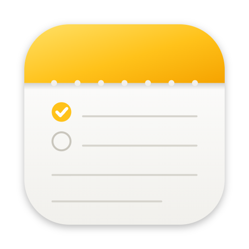

Delta Notes
A notes app by Deli5150 for Mac, Windows and Android.
Delta Notes keeps your thoughts, lists and pictures together: folders and tags, checklists and tables, sketches and recordings, locked notes, Math Notes — and Sync with Google so they’re on every computer you use. Inspired by Apple Notes, for macOS and Windows, with Android coming.
Bring your notes from Apple Notes, Samsung Notes, Notion, Evernote, Google Keep, Bear, Simplenote, Standard Notes, Obsidian, Word and PDF.
How Delta Notes uses Google data
Delta Notes only uses your Google account for two optional features you turn on yourself. Sync with Google keeps your notes in Delta Notes’ own private app folder in your Google Drive (it can’t see your other files). Google Tasks, under Connected Services, reads your task lists so they show as notes in the app; it only reads, never changes your tasks. Your data stays on your devices and in your own Google account: there are no Delta Notes servers, and nothing is shared with anyone. Delta Notes’ use and transfer to any other app of information received from Google APIs will adhere to the Google API Services User Data Policy, including the Limited Use requirements. See the privacy policy for details.
Free and open source.
Download